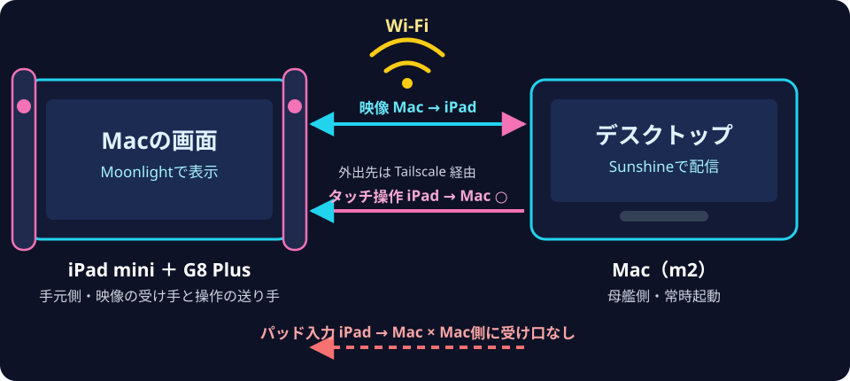
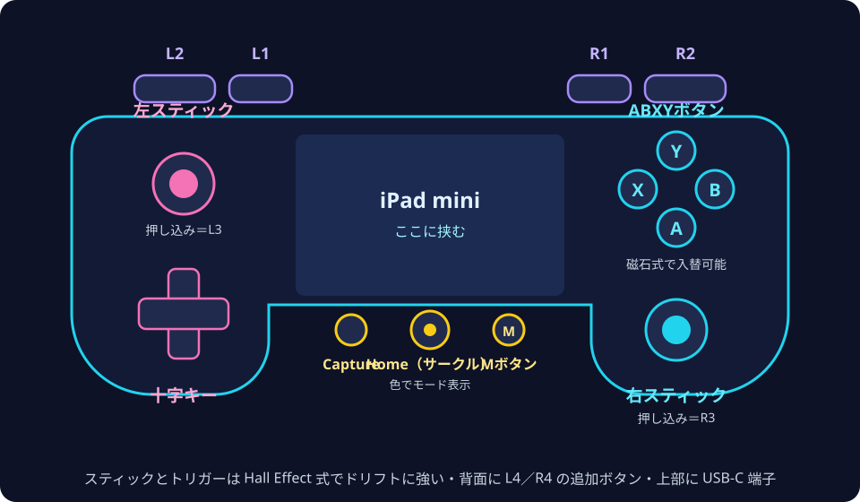
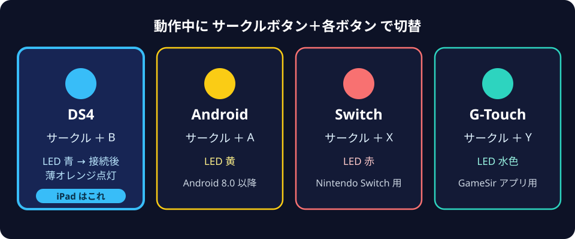
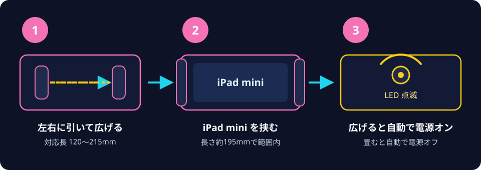
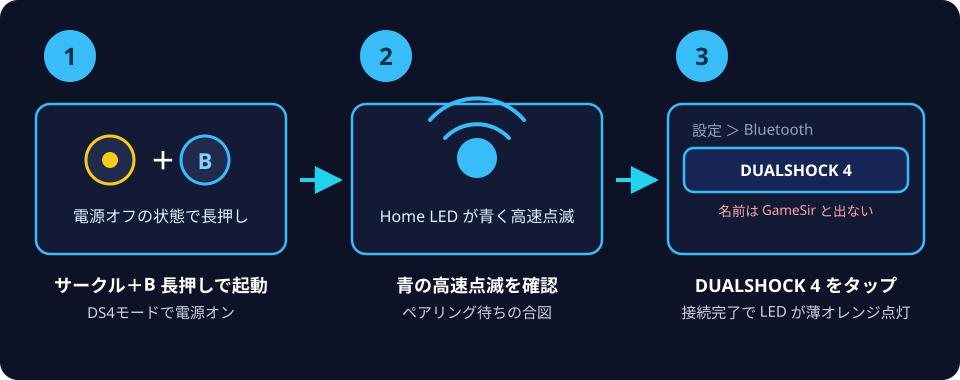
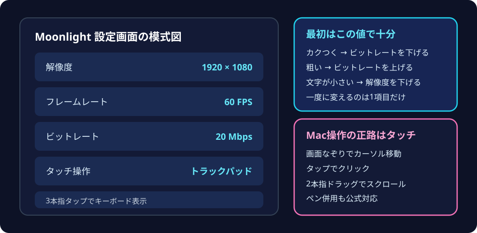
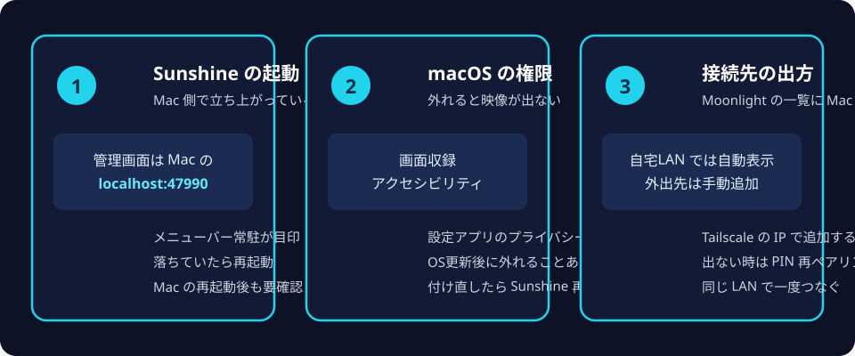

GameSir G8 Plus を iPad mini に挟み、Moonlight で自宅の Mac（m2）を触るための図解ガイド。取り付け・モード切替・ペアリング・推奨設定・つまずき対処まで。

図1 全体像。映像とタッチ操作は往復できる。パッド入力だけ Mac 側に受け口がない
macOS 版 Sunshine には仮想ゲームパッドがないため、現状 Moonlight 経由では G8 Plus の入力は Mac に届かない（実測済みの制約で設定ミスではない）。Mac の画面表示とタッチ操作は問題なく使える。G8 Plus は iPad のネイティブゲームではそのまま使える。詳しくは下の「正直な制約」へ。

図2 ボタン配置の模式図。実物と細部は異なる
中央の Home（サークル）ボタンが心臓部。電源とモード切替と状態表示を兼ねていて、LED の色でいまのモードが分かる。ABXY ボタンは磁石式で物理的に入れ替え可能。スティックキャップも交換式。
覚えるのは3つだけ。サークルボタン（電源とモード）、M ボタン、背面の L4／R4。残りは普通のコントローラーと同じ顔つき。

図3 モードは4種類。iPad で使うのは DS4 モードだけ
G8 Plus は相手に合わせて人格を切り替えるタイプ。動作中に サークルボタン＋各ボタンを押すとモードが切り替わり、Home LED の色が変わる。

図4 取り付けは3ステップ。電源ボタン探しは不要
コントローラーを左右に引いて広げ、iPad mini を挟むだけ。広げると自動で電源オン、畳むと自動で電源オフになる作り（G-Touch モード時を除く）。ケースを付けたままだと厚みで挟めないことがあるので、その時はケースを外す。

図5 初回だけの作業。名前の罠に注意
最大の罠は名前。DS4 モードの G8 Plus は Bluetooth 一覧に「GameSir」と出ず、DUALSHOCK 4 Wireless Controller という名前で現れる。これが本体。

図6 推奨値の目安。回線と好みに合わせて1項目ずつ調整
| 項目 | 推奨の目安 | 調整の方向 |
|---|---|---|
| 解像度 | 1920 × 1080 から開始 | 文字が読みにくければ下げる。粗さが気になれば上げる |
| フレームレート | 60 FPS | 据え置きで十分。上げるのは安定してから |
| ビットレート | 20 Mbps 前後（自宅 Wi-Fi） | カクつきは下げ、粗さは上げ。外出先はさらに低め |
| タッチ操作 | トラックパッド方式 | Mac 操作の正路。なぞりで移動・タップでクリック・2本指でスクロール |
解像度とビットレートは Moonlight の設定画面で変更できる。値は回線環境で変わる目安であり、固定の正解ではない。
キーボードの出し方。画面を3本指でタップするとキーボードが出る。文字入力はフリックと音声入力の併用が実用的。

図7 つながらない時に見る3点。設定変更ではなく状態確認
Sunshine は導入とペアリングまで完了済み。日常は触らなくてよい。つながらない時だけ、Mac 側で上の3点を確認する。管理画面は Mac のブラウザで localhost:47990 を開く（https の警告が出るのは自己署名証明書のためで想定内）。
2026年11月19日の実測で確定した内容。Sunshine の起動ログに gamepads.virtualhid-not-available と出て、ゲームパッド入力の受け口が全種別で無効だった。macOS 版 Sunshine でホスト側のゲームパッド再現には別途有償の Virtual HID Broker が必要と公式の互換表にもある。
| やりたいこと | 現状 | 補足 |
|---|---|---|
| Mac の画面を iPad に表示 | ○ | 映像ストリームは接続実測済み |
| タッチで Mac を操作 | ○ | トラックパッド方式が正路。ペン併用も可 |
| キーボード入力 | ○ | 3本指タップで表示。Bluetooth キーボード併用も可 |
| Moonlight 経由でパッド入力を Mac へ | × | Mac 側に仮想ゲームパッドがなく受け口なし |
| スティックでマウスカーソル操作 | × | 素の Moonlight と Mac の組み合わせでは不可 |
| iPad のネイティブゲームで G8 Plus 使用 | ○ | DS4 モードでそのまま使える。本来の主戦場 |
| Switch や Android での使用 | ○ | モード切替で対応 |
DS4 モードで起動しているか確認（サークル＋B 長押し・LED 青の高速点滅）。探す名前は DUALSHOCK 4 Wireless Controller。古い登録が残っていたら iPad 側で削除してから再試行。
故障ではなく現状の仕様。macOS 版 Sunshine に仮想ゲームパッドがないため。タッチ操作に切り替える。iPad のゲームで使う分には問題なし。
Mac 側で Sunshine が起動しているか、画面収録とアクセシビリティの権限が付いているかを確認。自宅 LAN で一度つないでから外出先利用に進む。外出先は Tailscale の IP で手動追加。
ビットレートを下げるのが先。次に解像度。5GHz の Wi-Fi に寄せる。外出先で Tailscale の中継経由になると遅延が増える点も想定内。
広げた状態で充電する。バッテリーは左右合計 1000mAh。畳むと自動オフになるため、開いたまま置くと減りが早い。
動作中のサークル＋各ボタンで切り替わる仕様。LED の色で現在のモードを確認し、iPad 用は DS4（接続後 薄オレンジ）に戻す。
GameSir G8 Plus 公式マニュアル（モード表・iOS 接続手順・対応長 120〜215mm）／ GameSir 公式マニュアル置き場 https://www.gamesir.hk/pages/manuals-gamesir-g8+ ／ Sunshine 公式リポジトリと互換表 https://github.com/LizardByte/Sunshine ／ Moonlight 公式 Wiki Setup Guide https://github.com/moonlight-stream/moonlight-docs/wiki/Setup-Guide ／ ユウキ環境の実測メモ ~/workspace/moonlight-fork/research.md（2026-11-19 Phase 0 実測）